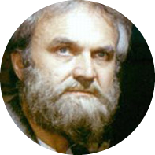

|  |
Jára CimrmanPlaywright, Inventor, Teacher, Philosopher, and Sportsman. I am a prolific writer, who wrote over 40 plays, which were later performed by the Cimrman Theatre in Prague. I am considered to be a master of Czech humor, satire, and parody. I am also an inventor, who has created various machines and devices, such as a flying bicycle, a machine for perpetual motion, and a device for detecting a lie. I am an accomplished sportsman, who has participated in various sports, including skiing, ice skating, and swimming. |
| Dates | Work |
|---|---|
| 1875-1877: | Worked as a teacher in various elementary schools in the Czech Republic |
| 1877-1881: | Invented a machine for perpetual motion, which unfortunately failed |
| 1881-1884: | Taught at a gymnasium in Prague |
| 1885: | Started writing plays, which were not successful initially |
| 1890-1901: | Worked as a tutor and sports instructor for the family of Baron Rothschild in Austria |
| 1901-1914: | Taught Czech language and literature in various high schools |
| 1914-1918: | Served as a soldier in the Austro-Hungarian army during World War I |
| 1918-1932: | Continued writing plays and inventing various devices |
| 1932: | Died in Prague |
|
|